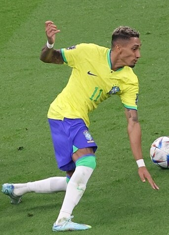

Raphael Dias Belloli (Porto Alegre, 14 de diciembre de 1996), más conocido como Raphinha, es un futbolista brasileño que juega de delantero en el F. C. Barcelona de la Primera División de España. Es internacional con la selección de fútbol de Brasil.
Comenzó su carrera deportiva en el Avaí en 2015,[3] abandonándolo en 2016, año en el que fichó por el Vitória Guimarães de la Primeira Liga portuguesa.[4] En sus dos campañas en el equipo portugués llamó la atención de varios conjuntos, siendo el Sporting de Portugal el que se hizo con sus servicios por 6,5 millones.[5] Tras una temporada en el Sporting se marchó, en verano de 2019, al Stade Rennes por un montante de 21 millones,[6] convirtiéndose en uno de los fichajes más caros de la Ligue 1 2019-20, y el segundo más caro en la historia del club de Rennes. En Francia estuvo poco más de un año, ya que el 5 de octubre de 2020 fue traspasado al Leeds United F. C.[7] El 13 de julio de 2022 el F. C. Barcelona anunció que había llegado a un principio de acuerdo con el club inglés para su traspaso, cerrándose una vez superara la revisión médica.[8] Debutó seis días después marcando y dando dos asistencias en la victoria por 0-6 sobre el Inter de Miami en un amistoso.[9] El 23 de julio marcó y fue nombrado jugador del partido en la victoria 0-1 sobre el Real Madrid C. F. en un amistoso jugado en Las Vegas.[10] Su primer gol en partido oficial llegó el 3 de septiembre; este fue el primero en la victoria por 0-3 sobre el Sevilla F. C. en la Liga.[11] Aprovechó una lesión de Ousmane Dembélé para ganar protagonismo y anotó goles decisivos que sirvieron para conseguir triunfos por la mínima ante el Valencia C. F. y el Athletic Club.[12][13] Terminó la temporada, en la que conquistaron el título de Liga[14] y Supercopa, consiguiendo un total de diez goles y habiendo dado doce asistencias.[15] Empezó su segundo año de azulgrana siendo expulsado en la primera jornada por agredir a un jugador del Getafe C. F., hecho por el que fue sancionado con dos partidos.[16] Después de la sanción añadió a sus registros dos goles y dos asistencias antes de sufrir una lesión en el bíceps femoral.[17] En la ida de los cuartos de final de la Liga de Campeones marcó un doblete frente al Paris Saint-Germain para dar ventaja en la eliminatoria a su equipo.[18] Terminó nuevamente la campaña en dobles dígitos tanto en goles como asistencias, pero con menos partidos disputados que el curso anterior.[19] Fue nombrado como uno de los capitanes en su tercera temporada como jugador del F. C. Barcelona[20] y el 31 de agosto de 2024 consiguió el primer triplete de su carrera contra el Real Valladolid C. F.[21] Anotó un segundo hat-trick el 23 de octubre en la Liga de Campeones frente al Bayern de Múnich el día que cumplía cien encuentros como azulgrana. En enero ganaron la Supercopa de España tras derrotar al Real Madrid en la final, de la que fue elegido mejor jugador después de marcar dos goles y dar una asistencia.[23]
El 13 de agosto de 2021 fue convocado por la selección de Brasil para disputar la triple fecha de clasificación para la Copa Mundial de 2022 frente a Chile, Argentina y Perú.[24] Finalmente hizo su debut el 7 de octubre, entrando desde la banca durante el medio tiempo en un 0:1 parcial en contra ante Venezuela.[25] En el partido asistió dos goles y consiguió un penal a favor para dar vuelta el marcador a un 3:1, siendo ampliamente elogiado por su desempeño tras el encuentro.[26][2
| Mundial | Sede | Resultado | Partidos | Goles |
|---|---|---|---|---|
| Copa mundial 2022 | qatar | Cuartos de final | 5 | 0 |
| Mundial | Sede | Resultado | Partidos | Goles |
|---|---|---|---|---|
| Copa america 2024 | Estados Unidos | Cuartos de final | 4 | 1 |
| Titulo | Club | Pais | Año |
|---|---|---|---|
| Copa de la liga de portugal | Sporting CP | Portugal | 2019 |
| Copa de portugal | Sporting CP | Portugal | 2019 |
| supercopa de españa | Barcelona | España | 2023 |
| Primera division de españa | Barcelona | España | 2023 |
| supercopa de españa | Barcelona | España | 2025 |